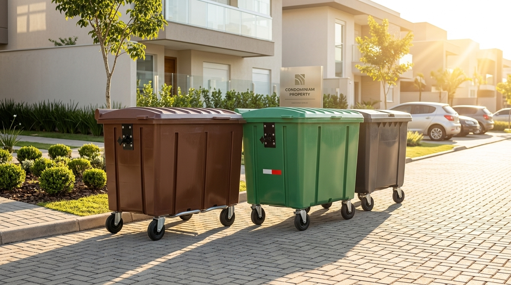

Missão
Transformar a coleta de resíduos em um processo mais inteligente, eficiente e sustentável por meio da tecnologia, auxiliando pequenos municípios na otimização de recursos e na tomada de decisões.
A SmartColeta é uma empresa de tecnologia dedicada a resolver um problema que o setor de saneamento urbano brasileiro insiste em tratar como inevitável: a gestão de resíduos sólidos em municípios de pequeno porte.
Enquanto grandes centros urbanos recebem investimento, pesquisa e políticas públicas voltadas à modernização da coleta de lixo, os municípios menores de até 50 mil habitantes, que juntos representam 36,78% da população brasileira, seguem operando sob o mesmo modelo de décadas atrás: caminhões percorrendo rotas fixas, em horários fixos, sem qualquer informação sobre o que realmente precisa ser coletado.
Fomos criados para mudar essa lógica. Não com promessas de automação total, mas com uma tecnologia simples e eficaz: sensores inteligentes que informam, em tempo real, o quanto cada ponto de coleta está realmente cheio, permitindo que a gestão pública decida com dado, não com rotina.

Hoje, administrar a coleta de resíduos em uma cidade pequena significa lidar com um conjunto de problemas interligados:
Nós entregamos exatamente o que falta nesse cenário: visibilidade. Transformamos a coleta de resíduos em um processo orientado por dados — a cidade para de adivinhar e passa a saber.
Transformar a coleta de resíduos em um processo mais inteligente, eficiente e sustentável por meio da tecnologia, auxiliando pequenos municípios na otimização de recursos e na tomada de decisões.
Ser referência em soluções inteligentes para a gestão de resíduos em pequenos municípios, contribuindo para cidades mais eficientes, conectadas e sustentáveis.
Buscamos reduzir desperdícios e contribuir para uma gestão de resíduos ambientalmente responsável.
Utilizamos a tecnologia para transformar problemas cotidianos em soluções inteligentes e acessíveis.
Valorizamos o uso inteligente de recursos, tempo e dados para tornar os processos da coleta mais eficientes.
A SmartColeta nasceu de uma constatação simples, mas incômoda: enquanto o volume de resíduos sólidos no Brasil crescia ano após ano, ultrapassando 80 milhões de toneladas geradas em 2023, a forma de coletar esse lixo nas cidades pequenas seguia praticamente parada no tempo.
O ponto de virada foi observar de perto a realidade orçamentária de uma prefeitura de pequeno porte: um gasto de cerca de R$ 120 mil por ano apenas com combustível e manutenção de dois caminhões de coleta, recurso consumido, em boa parte, por viagens a pontos de coleta que sequer estavam cheios, enquanto outros bairros acumulavam lixo sem atendimento.
Diante disso, ficou claro que o problema não era falta de esforço das equipes de campo, e sim falta de informação. Foi dessa constatação que nasceu a proposta da SmartColeta: usar sensoriamento inteligente para dar à gestão pública exatamente o dado que sempre faltou: quanto, onde e com que urgência cada ponto da cidade precisa ser atendido.
Hoje, seguimos construindo essa solução com um compromisso: provar que cidades pequenas não precisam de orçamentos grandes para ter uma gestão de resíduos tão inteligente quanto a de qualquer metrópole.